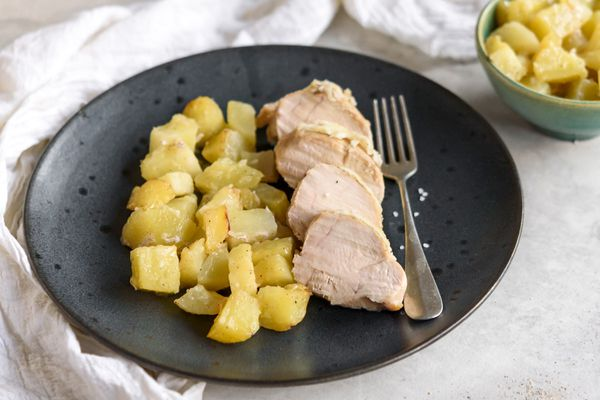

Safety Chicken
Home

Description
This recipe is useful for when you don't care for the taste what you're eating, don't want to put much effort into preparing food, but still want something that is healthy & nutritious. I like to prepare it when I want to put my focus & attention into a project, but don't want to be shaky & irritable while working on it.
The taste is passable enough to eat, but not particularly enjoyable. If you're looking for something that tastes a little better, I'd suggest taking a look at some of the other recipes on this website.
Ingredients
- 1-2 Russet potatos
- 2-3 Frozen chicken tenderloins
- A salt grinder
- Distilled water
Cooking Directions
- Peel your russet potatos with a potato peeler until there are no obvious dark spots on the potato.
- Cut your russet potatos into quarters & rinse them.
- Put chicken tenderloins & potato chunks into instant pot.
- Fill pot with distilled water until all potatos are at least 75% submerged.
- Grind a bit of salt into the instant pot.
- Put the lid onto the instant pot, and make sure that the pressure valve isn't set to "venting".
- Press the "Manual" button on the instant pot, and set time for 60 minutes.
- Once the timer goes off, press the cancel button to stop heating the food.
- Use a cloth to protect your hands from the hot steam & quickly flick the pressure valve to "venting".
- After the pot has released enough pressure for the lid to be removed, scoop out the chicken & potatos onto a bowl of your choosing.
- Optional: If you are serving this to someone who doesn't have functioning teeth, pour some of the broth from the instant pot into the bowl & mash the food until satisfied. You may choose to add more broth in the middle of mashing the food if you want it to be more watery.